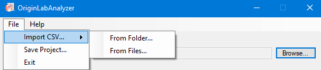
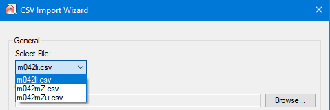
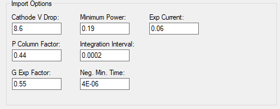
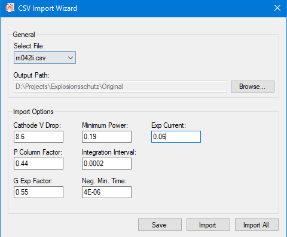

OLA has to parse raw osciloscope data in order to be able to insert it into OriginLab. To do so, you have to provide it with a CSV file.
To import files for parsing, you have to follow these steps:
1. Go to File -> Import CSV... -> From Folder.../From File... (Folder picker automatically selects all CSV files in the chosen folder) 
2. In the import window, select the file you wish to modify the import params of from the "Select File" dropdown. 
3. Select the "Output Path". This is where your parsed files will be saved.
4. You can now change the experimental values in the "Import Options" category. (This step is optional) Don't forget to save the changes by pressing "Save" before importing/switching to another file!
5. At last, press "Import" to import the current selected file OR "Import All" to import all files at once. 
The import wizard will now parse the CSV and automatically add the parsed files to the Files List in the analyzer. Well done!